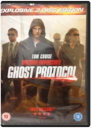 Mission Impossible: Ghost ProtocolMission Impossible: Ghost Protocol 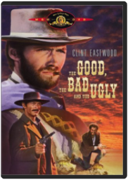 The Good, the Bad and the Ugly [Region 2]Eugenio Alabiso, Sergio LeoneThe Good, the Bad and the Ugly [Region 2]Eugenio Alabiso, Sergio Leone The Godfather I [DVD]Marlon Brando, Al Pacino, Peter Zinner, Francis Ford Coppola The Godfather I [DVD]Marlon Brando, Al Pacino, Peter Zinner, Francis Ford Coppola 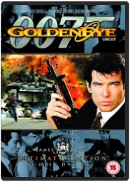 James Bond - Goldeneye (Ultimate Edition 2 Disc Set) [DVD] [1995]Pierce Brosnan, Tcheky Karyo, Martin CampbellJames Bond - Goldeneye (Ultimate Edition 2 Disc Set) [DVD] [1995]Pierce Brosnan, Tcheky Karyo, Martin Campbell 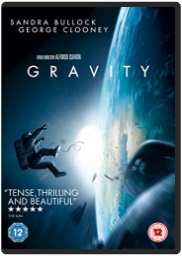 GravitySandra Bullock, George Clooney, Alfonso CuaronGravitySandra Bullock, George Clooney, Alfonso Cuaron The Italian Job [DVD] [1969]Michael Caine, Noel Coward, Peter Collinson The Italian Job [DVD] [1969]Michael Caine, Noel Coward, Peter Collinson Casino Royale (2 Disc Collector's Edition) [2006] [DVD]Daniel Craig, Eva Green, Martin Campbell Casino Royale (2 Disc Collector's Edition) [2006] [DVD]Daniel Craig, Eva Green, Martin Campbell Skyfall [DVD]Daniel Craig, Judi Dench, Sam Mendes Skyfall [DVD]Daniel Craig, Judi Dench, Sam Mendes The Imitation GameBenedict Cumberbatch, Keira Knightley, Morten Tyldum The Imitation GameBenedict Cumberbatch, Keira Knightley, Morten Tyldum 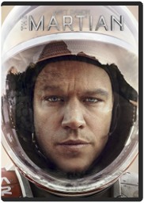 The MartianMatt Damon, Kate Mara, Ridley ScottThe MartianMatt Damon, Kate Mara, Ridley Scott Gangs of New York [DVD] [2003]Daniel Day-Lewis, Leonardo DiCaprio, Martin Scorsese Gangs of New York [DVD] [2003]Daniel Day-Lewis, Leonardo DiCaprio, Martin Scorsese 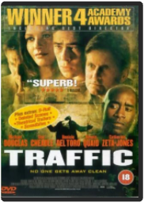 Traffic [DVD] [2001]Michael Douglas, Catherine Zeta-JonesTraffic [DVD] [2001]Michael Douglas, Catherine Zeta-Jones 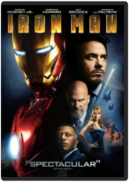 Iron Man [DVD] [2008]Robert Downey Jr., Terrence Howard, Jon FavreauIron Man [DVD] [2008]Robert Downey Jr., Terrence Howard, Jon Favreau 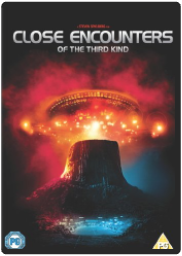 Close Encounters of the Third Kind [DVD] [2011]Richard Dreyfuss, Teri Garr, Steven SpielbergClose Encounters of the Third Kind [DVD] [2011]Richard Dreyfuss, Teri Garr, Steven Spielberg Dirty HarryClint Eastwood, Harry Guardino, Don Siegel Dirty HarryClint Eastwood, Harry Guardino, Don Siegel 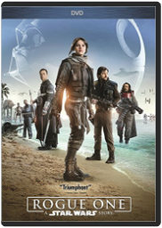 Rogue One: A Star Wars StoryGareth EdwardsRogue One: A Star Wars StoryGareth Edwards Air Force OneHarrison Ford, Gary Oldman, Wolfgang Petersen Air Force OneHarrison Ford, Gary Oldman, Wolfgang Petersen 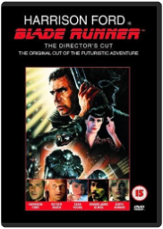 Blade RunnerHarrison Ford, Rutger Hauer, Ridley ScottBlade RunnerHarrison Ford, Rutger Hauer, Ridley Scott 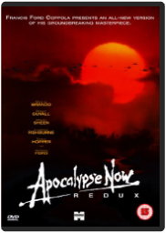 Apocalypse Now Redux [DVD] [1979]Marlon Brando|Robert Duvall|Martin Sheen|Frederic Forrest, Francis Ford CoppolaApocalypse Now Redux [DVD] [1979]Marlon Brando|Robert Duvall|Martin Sheen|Frederic Forrest, Francis Ford Coppola 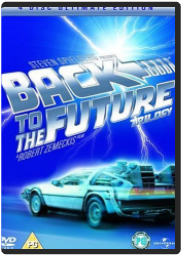 Back To The Future Trilogy (4 Disc Ultimate Edition) [DVD] [1985]Michael J. Fox, Flea, Robert ZemeckisBack To The Future Trilogy (4 Disc Ultimate Edition) [DVD] [1985]Michael J. Fox, Flea, Robert Zemeckis 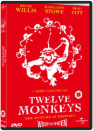 Twelve MonkeysTerry GilliamTwelve MonkeysTerry Gilliam 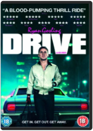 DriveRyan Gosling, Carey Mulligan, Nicolas Winding RefnDriveRyan Gosling, Carey Mulligan, Nicolas Winding Refn No Country for Old Men [DVD]Tommy Lee Jones, Javier Bardem, Ethan Coen, Joel Coen No Country for Old Men [DVD]Tommy Lee Jones, Javier Bardem, Ethan Coen, Joel Coen Full Metal JacketStanley Kubrick Full Metal JacketStanley Kubrick Atomic BlondeDavid Leitch Atomic BlondeDavid Leitch 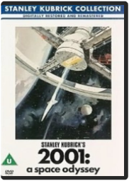 2001: A Space OdysseyRay Lovejoy, Stanley Kubrick2001: A Space OdysseyRay Lovejoy, Stanley Kubrick 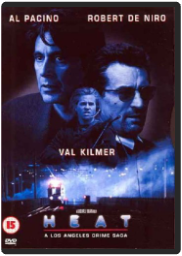 Heat [Region 2]Michael MannHeat [Region 2]Michael Mann 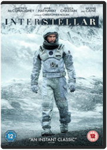 InterstellarMatthew McConaughey, Anne Hathaway, Christopher NolanInterstellarMatthew McConaughey, Anne Hathaway, Christopher Nolan 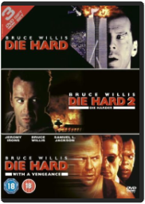 Die Hard [Region 2]John McTiernan, Konstantin Bronzit, Renny HarlinDie Hard [Region 2]John McTiernan, Konstantin Bronzit, Renny Harlin Ghostbusters [DVD] [2004]Bill Murray, Dan Aykroyd, Ivan Reitman Ghostbusters [DVD] [2004]Bill Murray, Dan Aykroyd, Ivan Reitman 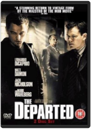 The Departed (2006) [DVD]Jack Nicholson, Leonardo Dicaprio, Martin ScorseseThe Departed (2006) [DVD]Jack Nicholson, Leonardo Dicaprio, Martin Scorsese Casino [DVD] [1996]Robert De Niro, Sharon Stone, Martin Scorsese Casino [DVD] [1996]Robert De Niro, Sharon Stone, Martin Scorsese Taxi Driver [DVD] [1999]Robert De Niro, Jodie Foster, Melvin Shapiro, Tom Rolf, Martin Scorsese Taxi Driver [DVD] [1999]Robert De Niro, Jodie Foster, Melvin Shapiro, Tom Rolf, Martin Scorsese Scarface [DVD]Al Pacino, Steven Bauer, Brian De Palma Scarface [DVD]Al Pacino, Steven Bauer, Brian De Palma Fight Club [1999] [DVD]Brad Pitt, Edward Norton, David Fincher Fight Club [1999] [DVD]Brad Pitt, Edward Norton, David Fincher FuryBrad Pitt, Shia LaBeouf, David Ayer FuryBrad Pitt, Shia LaBeouf, David Ayer 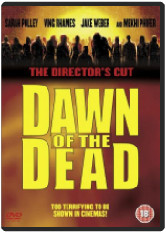 Dawn Of The Dead (The Directors Cut) [DVD] [2004]Sarah Polley, Ving Rhames, Zack SnyderDawn Of The Dead (The Directors Cut) [DVD] [2004]Sarah Polley, Ving Rhames, Zack Snyder 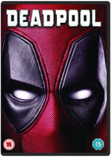 DeadpoolRyan Reynolds, Morena Baccarin, Tim MillerDeadpoolRyan Reynolds, Morena Baccarin, Tim Miller 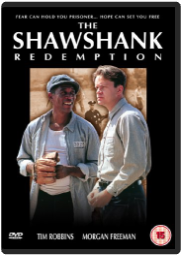 The Shawshank Redemption [DVD] [1995]Tim Robbins, Morgan Freeman, Richard Francis-Bruce, Frank DarabontThe Shawshank Redemption [DVD] [1995]Tim Robbins, Morgan Freeman, Richard Francis-Bruce, Frank Darabont 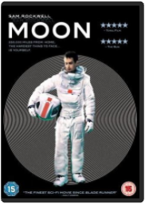 Moon [DVD] [2009]Sam Rockwell, Kevin Spacey, Duncan JonesMoon [DVD] [2009]Sam Rockwell, Kevin Spacey, Duncan Jones 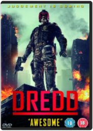 DreddKarl Urban, Olivia Thirlby, Pete TravisDreddKarl Urban, Olivia Thirlby, Pete Travis The Raid [DVD]Iko Uwais, Joe Taslim, Gareth Evans The Raid [DVD]Iko Uwais, Joe Taslim, Gareth Evans 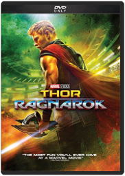 THOR: RAGNAROKTaika WaititiTHOR: RAGNAROKTaika Waititi 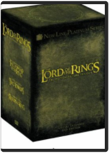 The Lord of the Rings Trilogy (Extended Edition Box Set) [DVD]Elijah Wood, Ian McKellen, Peter JacksonThe Lord of the Rings Trilogy (Extended Edition Box Set) [DVD]Elijah Wood, Ian McKellen, Peter Jackson Shaun of the Dead [DVD] [Import]Edgar Wright Shaun of the Dead [DVD] [Import]Edgar Wright |